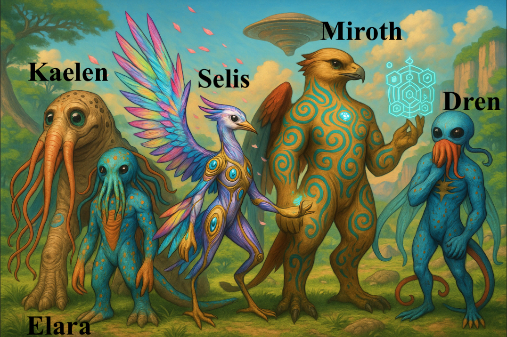

Short stories
Adventures on Sorathia
Before Elara became a Multiversal disruptor, she was a Sorathian child with dangerous perception, too much curiosity, and a talent for noticing Entropy in systems adults preferred to call stable.

Start here
A living world with too many assumptions of permanence.
Sorathia is a very green, bioluminescent, socially complex, and biologically engineered planet with too many sapient species. Its inhabitants trade algorithms, shape environments with thought-responsive living technology, and communication systems as diverse as their sapient species.
These stories are the accessible on-ramp: colorful, strange, funny, and full of the early paradoxes that eventually force Elara to become insufferably competent.
Reading path
Featured transmissions
Chromatic Grammar for BeginnersHow Veyari bodies turn thought, emotion, and social intention into color.Origin
The Market at JysoriaA barter economy where the goods are biological algorithms and everyone is pretending that is normal.Society
The Queen's AlgorithmA Myrmin encounter gives Elara a tool for seeing behavior across millions of lives at once.Turning point